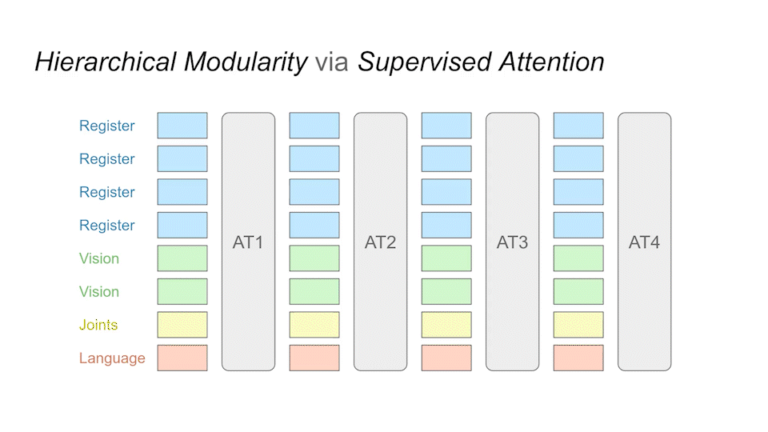
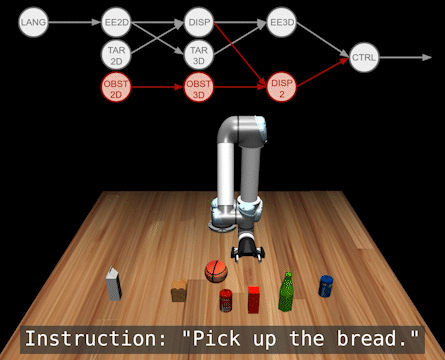
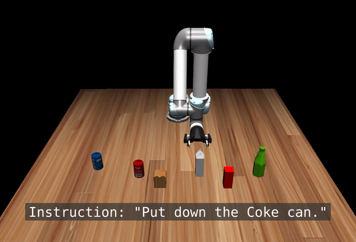

Transfer across Robots

Language-conditioned policies allow robots to interpret and execute human instructions. Learning such policies requires a substantial investment with regards to time and compute resources. Still, the resulting controllers are highly device-specific and cannot easily be transferred to a robot with different morphology, capability, appearance or dynamics. In this paper, we propose a sample-efficient approach for training language-conditioned manipulation policies that allows for rapid transfer across different types of robots. By introducing a novel method, namely Hierarchical Modularity, and adopting supervised attention across multiple sub-modules, we bridge the divide between modular and end-to-end learning and enable the reuse of functional building blocks. In both simulated and real world robot manipulation experiments, we demonstrate that our method outperforms the current state-of-the-art methods and can transfer policies across 4 different robots in a sample-efficient manner. Finally, we show that the functionality of learned sub-modules is maintained beyond the training process and can be used to introspect the robot decision-making process.
Our method is data-efficient for training and transfer. This is achieved by forming sub-modules through attention layers in a cascading manner.
After training, we can query the individual modules at runtime to see What each module is generating.

We can also use this to add new modules, i.e., tasks. Below we add functionality for obstacle avoidance into a pre-existing language-conditioned policy.
Here are some more testing results. For detailed quantitative results, please refer to our paper at Corl 2022.
@inproceedings{
zhou2022modularity,
title={Modularity through Attention: Efficient Training and Transfer of Language-Conditioned Policies for Robot Manipulation},
author={Yifan Zhou and Shubham Sonawani and Mariano Phielipp and Simon Stepputtis and Heni Ben Amor},
booktitle={6th Annual Conference on Robot Learning},
year={2022},
url={https://openreview.net/forum?id=uCaNr6_dQB0}
}